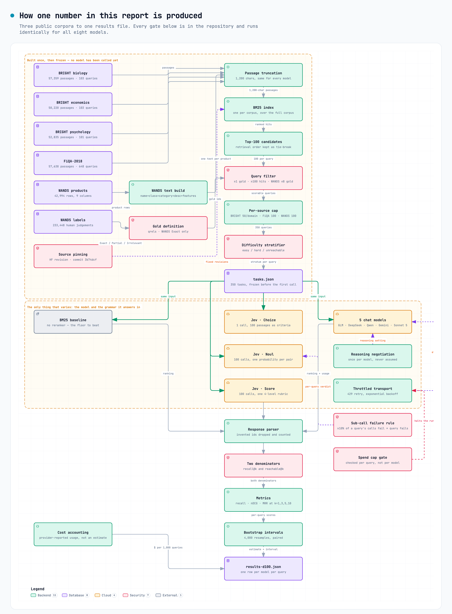

DevX Labs · Internal · 350 questions · 2,800 model calls
Picking the right chunks
The answer
In a RAG system you hand a model a pile of text chunks and ask it to pick the ones that answer the question. We tested who picks best, and what each picker costs.
glm-5.3-flash scored highest, finding 36.9% of the right chunks — but no model is reliably best. The top scores sit inside each other's error bars, and when every model is scored on one identical set of questions the order changes. The result that survives both ways of counting is that every model beats keyword search by a similar margin, so the thing to choose on is price, not accuracy.
Jev's encodings that could be scored agree with each other. Jev · Score (per passage) found 33.7% at $2.82 per thousand questions and Jev · Noul (per passage) found 33.4% at $2.70, a gap of 0.3 of a percentage point, which is far inside the error bars on either. The cheapest scoreable Jev encoding costs $2.70 per thousand questions, against $2.91 for the cheapest non-Jev model that answered enough questions to be scored. Jev · Choice (all chunks at once) answered only 265 of 350 questions, so its score is withheld for the same reason the table withholds it, though it was the cheapest thing in the run at $0.67 per thousand questions.
Every model beat the free option — and by almost exactly the same amount. Before any model is called, a plain keyword search has already put the chunks in some order. All 7 models improved on that order, by between 7.6 and 12.2 percentage points — a spread of 4.6 points across the whole field. So the reranking step is worth paying for, but which model does it is not something this test can tell apart. What separates them is price. 1 model (sonnet-5) returned no scoreable answer at all and is excluded from that count.
A ceiling limits all of this: 46.5%. That is the share of correct chunks the keyword search put in front of the models at all. No picker can find a chunk it was never shown. Every score below sits under that ceiling, and the ceiling is the single biggest lever in the system — bigger than the choice of model.
| Model | Found the right chunks | 95% range | Cost per 1,000 questions | Typical speed |
|---|---|---|---|---|
| glm-5.3-flash | 36.9% | 32.4% to 41.5% | $2.91 | 3,156 ms |
| qwen3.8-flash | 36.1% | 31.7% to 40.6% | $3.38 | 4,513 ms |
| deepseek-v4.1-flash | 35.9% | 31.4% to 40.3% | $4.74 | 3,047 ms |
| Jev · Score (per passage) | 33.7% | 29.7% to 37.9% | $2.82 | 6,879 ms |
| Jev · Noul (per passage) | 33.4% | 29.5% to 37.7% | $2.70 | 6,841 ms |
| gemini-3.8-flash | answered only 287 of 350 — not comparable | $13.23 | 3,708 ms | |
| Jev · Choice (all chunks at once) | answered only 265 of 350 — not comparable | $0.67 | 582 ms | |
| sonnet-5 | answered only 0 of 350 — not comparable | $0.00 | — | |
| BM25 only (no model) | 25.9% | 21.8% to 30.1% | $0.00 | 0 ms |
How the numbers were made
Before any result: the figure below is the whole experiment, start to finish. Read it once and every number in this report is traceable. Nothing on the left-hand side of tasks.json involves a model — the questions, the chunks and the right answers were fixed, written to disk and hashed before the first model was called.

1 · What we tested
One job: given a question and 100 text chunks, put the chunks in order, best first. We then check whether the chunks that actually answer the question ended up in the top 5.
This is the job a RAG system does every time someone asks it something. It is usually called reranking. The 5 best chunks are what gets passed to the model that writes the final answer, so a chunk that does not make the top 5 might as well not exist.
We used 3 real collections, not a made-up test set. Between them they cover 5 topic areas:
- BRIGHT — real questions people posted on StackExchange, each several hundred words long, over a corpus of real documents. It was built specifically so that keyword matching does not work. It is hard on purpose.
- FiQA — real finance questions over 218,052 real answer passages. Ordinary difficulty.
Together: 350 questions, 4.4 correct chunks per question on average, 35,000 chunks ranked per model.
Nobody wrote these questions or judged these answers for us. The questions are real and the judgments of which chunk is correct come with the datasets.
2 · How we tested it
Every model saw exactly the same thing. Same questions, same 100 chunks, in the same order, asked the same way. The only thing that changed was the model.
The 100 chunks are not random. They come from a keyword search (BM25) run over the whole corpus — the same first step a real RAG system uses. So the wrong chunks are genuinely tempting wrong chunks: text that mentions the right words but does not answer the question. That is what makes the job hard.
The two kinds of model answer differently, so each was asked in its own native way:
- Jev is given the chunks as its options and returns a score for every one. That ordering is the answer. There is no prompt to tune and no output format to enforce.
- Chat models are given the chunks in a prompt and asked to reply with a JSON list of the best 10 chunk ids.
We also ran a free baseline: the keyword search's own order, with no model involved. This matters more than it sounds. It is the thing every model has to beat to justify existing.
What we count. For each question, what share of the correct chunks made the top 5. Averaged over all 350 questions. We report a 95% range beside every score, worked out by resampling the questions — so you can see when two models are too close to separate.
3 · The analysis
"Jev" is not one number
Jev takes a question in one of three grammars, and which one you pick changes the answer, the bill and the failure rate. We ran all three against the identical questions and chunks. Same model id in every request; only the shape of the question differs.
| How we asked | Right in 5 | Of what it was shown | HTTP calls per question | Input tokens per question | Cost per 1,000 questions | Questions it could not answer |
|---|---|---|---|---|---|---|
| Jev · Choice (all chunks at once) all 100 chunks as options in one question; they share one pool of probability | 27.7% | 75.5% | 1 | 21,061 | $0.67 | 85 of 350 |
| Jev · Noul (per passage) one yes/no question per chunk: is this chunk an answer? | 33.4% | 71.0% | 100 | 64,247 | $2.70 | 0 of 350 |
| Jev · Score (per passage) one question per chunk, placed on a four-level usefulness rubric | 33.7% | 70.6% | 100 | 67,245 | $2.82 | 0 of 350 |
The gap between the best and worst way of asking the same model is 6.0%, and the gap in price is 4×. The most accurate encoding here is Jev · Score (per passage); the cheapest is Jev · Choice (all chunks at once) — they are not the same one, so this is a choice, not a default. Any sentence of the form “Jev scores X” is incomplete without naming which of these three it means.
The two collections
| Model | BRIGHT biology | BRIGHT economics | BRIGHT psychology | FiQA finance | WANDS shopping |
|---|---|---|---|---|---|
| glm-5.3-flash | 17.9% | 15.8% | 14.0% | 42.0% | 59.7% |
| qwen3.8-flash | 16.8% | 14.3% | 13.3% | 40.6% | 62.9% |
| deepseek-v4.1-flash | 16.0% | 16.5% | 13.5% | 40.8% | 61.4% |
| Jev · Score (per passage) | 15.6% | 13.5% | 13.1% | 37.6% | 59.2% |
| Jev · Noul (per passage) | 15.9% | 14.5% | 10.6% | 37.2% | 59.4% |
| gemini-3.8-flash | 19.6% | 18.5% | 11.2% | 43.5% | 52.1% |
| Jev · Choice (all chunks at once) | 18.3% | 18.1% | 13.9% | 40.1% | 52.0% |
| sonnet-5 | — | — | — | — | — |
| BM25 only (no model) | 3.7% | 9.1% | 4.6% | 28.1% | 53.7% |
The two collections are different problems. FiQA scores are several times higher than BRIGHT scores for every model, including the free baseline. BRIGHT was designed to defeat keyword search, and it does: the keyword step hands over very little that is correct, so there is little for any picker to find.
Most of the average is decided before any model sees anything. Every question falls into one of three slices, decided by the keyword search alone and recorded before the run: the correct chunk is already in the keyword top 5 (nothing to fix), it is somewhere in the hundred but not the top 5 (the only slice where a picker can earn its money), or it is not in the hundred at all (nobody can win). Split that way:
| Model | Hard — a correct chunk is in the 100, none in the keyword top 5 86 questions | Already solved — keyword search had one in its own top 5 132 questions | Impossible — no correct chunk in the 100 at all 132 questions |
|---|---|---|---|
| glm-5.3-flash | 36.0% 83 scored | 73.3% 127 scored | 0.0% 123 scored |
| qwen3.8-flash | 39.1% 86 scored | 70.1% 131 scored | 0.0% 131 scored |
| deepseek-v4.1-flash | 36.9% 85 scored | 70.8% 131 scored | 0.0% 130 scored |
| Jev · Score (per passage) | 35.9% 86 scored | 66.0% 132 scored | 0.0% 132 scored |
| Jev · Noul (per passage) | 36.5% 86 scored | 64.9% 132 scored | 0.0% 132 scored |
| gemini-3.8-flash | 44.7% 75 scored | 63.5% 90 scored | 0.0% 122 scored |
| Jev · Choice (all chunks at once) | 40.7% 67 scored | 61.4% 75 scored | 0.0% 123 scored |
| sonnet-5 | — 0 scored | — 0 scored | — 0 scored |
| BM25 only (no model) | 0.0% 86 scored | 68.6% 132 scored | 0.0% 132 scored |
Read the first column. It is the only one where a picker can change the outcome. The second is the score a model gets for leaving things alone, and the third is zero for everyone by construction — no ranking of a hundred chunks can surface a chunk that is not among them. An average taken across all three mostly measures how often the keyword search had already done the job.
One exam for everyone
The main table scores each model over the questions it personally answered. Models that failed on some questions are therefore not sitting the same exam, and a ranking built that way can be an artefact of who dropped which questions. So here is the same field scored over only the 217 questions that every model answered.
| Model | On the 217 questions every model answered | Rank here | Rank on the main table |
|---|---|---|---|
| gemini-3.8-flash | 28.3% | 1 | 6 |
| glm-5.3-flash | 26.2% | 2 | 1 |
| Jev · Choice (all chunks at once) | 26.1% | 3 | 7 |
| qwen3.8-flash | 25.8% | 4 | 2 |
| deepseek-v4.1-flash | 25.6% | 5 | 3 |
| Jev · Score (per passage) | 23.7% | 6 | 4 |
| Jev · Noul (per passage) | 23.5% | 7 | 5 |
| BM25 only (no model) | 14.6% | 8 | 9 |
The order changes. On one shared exam gemini-3.8-flash leads, not glm-5.3-flash, and 7 of 8 entries change place. The models then all sit within 4.8 percentage points of each other. Neither table is wrong; they answer different questions. The main table answers “what do I get if I buy this one”, counting each model only on what it managed to answer. This one answers “which one is better at the job”, and its answer is that the test cannot tell. Any ranking that survives only one of these two framings is not a finding about the models.
Where the models help is not where you would guess. The lift each model gives over the free keyword baseline, measured question by question on the same questions:
| Model | Better than free keyword search by | 95% range | Verdict |
|---|---|---|---|
| glm-5.3-flash | +10.0% | 7.1% to 12.9% | really helps |
| qwen3.8-flash | +10.3% | 7.4% to 13.4% | really helps |
| deepseek-v4.1-flash | +10.0% | 7.2% to 12.9% | really helps |
| Jev · Score (per passage) | +7.8% | 4.7% to 11.0% | really helps |
| Jev · Noul (per passage) | +7.6% | 4.4% to 10.7% | really helps |
| gemini-3.8-flash | +12.2% | 8.8% to 15.6% | really helps |
| Jev · Choice (all chunks at once) | +10.6% | 7.2% to 14.2% | really helps |
| sonnet-5 | — | to | cannot tell |
Every model appears in this table, including the two whose scores the main table withholds. That is deliberate, and it is a different rule rather than a softer one. A raw score over a partial set of questions is not comparable to a raw score over all of them, because the two are averages of different exams. A lift is: it is measured question by question against the same keyword baseline on the same questions that model answered, so a model that answered fewer questions is still being compared against exactly its own set. What a partial lift cannot tell you is whether that model would hold the same margin on the questions it failed, which is why a low-coverage model is shown here and still withheld from the headline.
A "tie" verdict means the test cannot tell that model apart from doing nothing. It does not mean the model is bad. It means this sample of 350 questions is not enough to prove it helps, and paying for it is a bet rather than a decision.
| 1 | 2 | 3 | 4 | 5 | 6 | 7 | 8 | 9 | |
|---|---|---|---|---|---|---|---|---|---|
| 1glm-5.3-flash | · | = | = | + | + | − | = | = | + |
| 2qwen3.8-flash | = | · | = | + | + | − | = | = | + |
| 3deepseek-v4.1-flash | = | = | · | + | + | − | = | = | + |
| 4Jev · Score (per passage) | − | − | − | · | = | − | − | = | + |
| 5Jev · Noul (per passage) | − | − | − | = | · | − | − | = | + |
| 6gemini-3.8-flash | + | + | + | + | + | · | + | = | + |
| 7Jev · Choice (all chunks at once) | = | = | = | + | + | − | · | = | + |
| 8sonnet-5 | = | = | = | = | = | = | = | · | = |
| 9BM25 only (no model) | − | − | − | − | − | − | − | = | · |
A + means the model on that row really is better than the model in that column. A = means we cannot tell them apart. Most of this grid is =, and that is the honest result.
4 · Cost against effectiveness
The horizontal axis is cost per thousand questions and it is a log scale — each step is ten times the last. It has to be, because the cheapest and dearest models here are 2× apart in price while sitting within about a point of each other on quality.
Jev sits at the far left. Its price comes almost entirely from reading the chunks, because it charges nothing for what it writes back. A reranking job is nearly all reading: 100 chunks in, a short list out. That is the single reason the gap is this wide, and it would narrow on a job that produced long output.
Not every model is on the chart. gemini-3.8-flash answered only 287 of 350 questions, below the 90% needed to average a score, at $13.23 per 1,000; Jev · Choice (all chunks at once) answered only 265 of 350 questions, below the 90% needed to average a score, at $0.67 per 1,000; sonnet-5 never returned a priced answer (0 of 350 questions); BM25 only (no model) costs nothing, and zero has no place on a log axis (it scored 25.9%). Their numbers are all in Appendix B and Appendix C; they are kept off this chart because averaging a model's score over the questions it happened to survive is arithmetic, not measurement.
The premium model produced nothing at this size, and the reason is not the model. sonnet-5 was in the roster and was called on all 350 questions. Every call came back HTTP 403: Key limit exceeded: the API key used for this run carries its own spending cap, separate from the account balance, and the run crossed it at $10.66 while working through the cheaper models. So sonnet-5 spent nothing, answered nothing, and appears in Appendix C with 350 failures and no score. We are not reporting a number for it at this depth, because there is no number to report. Its projected cost had it run — $24.73 per thousand questions, scaled from its own measured price on the 20-chunk run — is arithmetic on a measurement, not a measurement.
deepseek-v4.1-flash was the dearest model whose answers we can actually score. Not the dearest we tried: gemini-3.8-flash cost $13.23 per thousand questions, more than any scored model, and is absent from the chart above for answering too few of them.
The same test with only 20 chunks
We ran a second, smaller version: the same questions, but only the top 20 chunks, which is cheap enough to include a premium model.
Jev scored 17.9%. Total spend $0.58.
sonnet-5 could not be measured here. Only 37 of 101 of its calls completed — the rest were refused by the provider for want of prepaid credit, not by the model. The questions that did get through are the ones that happened to run first, not a fair sample, so averaging them would produce a number that looks like a result and is not one. It is left out rather than dressed up.
The 20-chunk version is much harder than it looks, because with only 20 chunks the keyword step hands over almost nothing correct on the BRIGHT questions. The lesson is not about the models. It is that giving the picker more chunks to look at raises the ceiling faster than upgrading the picker does.
5 · What could be wrong with this
The ceiling dominates everything. At 46.5%, most correct chunks were never shown to any model. A better first-stage retriever — a proper embedding search instead of keyword matching — would change every number here, probably by more than swapping models does. We used keyword search because it is reproducible with no dependencies and no training, not because it is the best available.
350 questions is a small sample. That is why most comparisons come back as ties. The ranges in the tables are real; if two of them overlap, we are not claiming a winner.
One run, no repeats. Every model was asked once per question at temperature 0. We did not measure run-to-run variation.
The judgments are binary and incomplete. A chunk is either marked correct or it is not. A genuinely useful chunk nobody happened to judge counts as wrong, for every model equally.
Prompt shape favours nobody deliberately, but it is one shape. The chat models got one prompt. A different prompt, or a purpose-built reranking model, could do better. We did not tune per model, because tuning one and not the others is how benchmarks get rigged.
Jev's Choice encoding has a size limit, and we hit it. Choice puts all 100 chunks into one request, and the endpoint refuses a request whose input passes about 32,768 tokens with max_tokens_exceeded. That number is measured, not guessed: the largest Choice request that ever succeeded here carried 32,850 input tokens, the 99th percentile of successful requests is 32,779, and nothing above that returned an answer. 85 of 350 questions crossed the line — 84 of them from the shopping corpus, whose product descriptions are long. Counting characters instead of tokens does not predict it: the biggest request that succeeded held 119,182 characters and the smallest that failed held 106,391, because text packs into tokens at anywhere from 2.9 to 4.2 characters depending on the corpus. The per-chunk encodings never hit it, because each of their calls carries one chunk. If you plan to rerank 100 long chunks in a single call, this is the constraint to design around.
Every result here is one model asked three ways, not three products. Section 3 breaks that out. Treat "Jev scores X" as meaningless without the encoding attached.
Cost is what the provider billed us, read back from each call, not estimated from a price list.
6 · Why you should believe this
Benchmarks published by the people who ran them get the same seven objections every time. Here is each one, and what in this run answers it.
"You picked the questions that made your model look good." Every question was chosen and written to disk before any model was called. The selection rule is mechanical: take every judged query in each corpus in sorted id order, keep the first 50 per BRIGHT domain, 100 from FiQA and 100 from WANDS, retrieve the top 100 chunks for each with BM25, and freeze the result to disk — no random sampling, no seed. Nothing was dropped after a result came back. All 350 questions are reported, including the ones every model failed.
"You only show the questions your model wins." The report is the full set. Section 3 splits it by corpus and by difficulty, so a model that wins only on the easy third is visible as exactly that. The hardest slice — questions where the keyword search put no correct chunk in the first five — is reported separately, not averaged away.
"These datasets are in the models' training data." Very probably, and we cannot rule it out. Three things bound the damage. The task is not recall of an answer: it is ranking a fixed list of chunks that we assembled, in an order we produced. Memorisation would help every chat model here, and the cheap chat models are not the ones winning. And if memorisation were driving the scores, the hard slice would not collapse the way it does for every model at once. We state this as a limitation, not as a solved problem.
"Different harnesses give different numbers." There is one harness. Every model gets the same questions, the same chunks, in the same order, through the same code path, with the same tie-break rule and the same parser. The only thing that differs is the model name in the request. The request builder is one function per protocol and both are in the repository.
"The costs are your estimate." They are not. Every cost in this report is the number the provider itself returned in the usage block of that call, summed. A call that came back without a usage block is a failure, not a free call, and is counted as one.
"There's no baseline." The keyword search is in every table, at zero cost. It is a real floor: a model that does not beat it is worse than nothing.
"You report a single number." Every score carries a bootstrap interval, and every model-to-model comparison is paired over the same questions. Where two intervals overlap we say tie, not winner.
Measured against how this kind of test is normally published
Before writing this up we read how other people publish reranking benchmarks: vendor launch posts from Voyage AI and Jina, independent comparisons from Agentset, LlamaIndex, Mixpeek and ZeroEntropy, and the BEIR/MIRACL family of papers they cite. Eighteen posts found, seven read end to end. That is the denominator for every count below.
| Practice | How often the seven do it | Here | | --- | --- | --- | | Publish a runnable harness, not just a table | 2 of 7 | Yes — scripts/run_rag.py, one command | | Name the public datasets used | 4 of 7 | Yes — BRIGHT, FiQA, WANDS, with row ids | | Break results down per corpus, not one blended score | 2 of 7 | Yes — per corpus and per difficulty | | Report cost and latency together | 2 of 7 | Yes — cost as billed, latency as p50 and p95 | | Give confidence intervals or a significance test | 0 of 7 | Yes — bootstrap intervals, paired | | Have a limitations section at all | 0 of 7 | Yes — section 5 | | State the retrieval ceiling the reranker cannot beat | 0 of 7 | Yes — the impossible slice, counted | | Show their own preferred option losing | 2 of 7 | Yes — Choice loses to Noul, below |
The two most common holes in published reranking benchmarks are the two that matter most for a buying decision: no error bars, so a one-point win reads the same as a twenty-point win, and no statement of what the keyword search never surfaced, so the reranker gets blamed or credited for the retriever's work. Both are closed here, and closing them is what produced this report's least flattering numbers.
What would falsify this. Run scripts/run_rag.py against the same tasks.json and get materially different recall. The tasks file, the results file with every per-question row, and both scripts are in the repository. Nothing in this report is derived from a number that is not in that results file.
Appendix A · The protocol in full
- Questions: 350 (BRIGHT biology, BRIGHT economics, BRIGHT psychology, FiQA finance, WANDS shopping).
- Chunks per question: 100, from BM25 over the full corpus.
- Asked for: the best 10 chunk ids, best first.
- Scored on: share of correct chunks in the top 5.
- Models: 8, plus the free keyword baseline.
- Calls: 2,800. Total spend: $10.66.
- Temperature: 0. Reasoning disabled where the provider allows it.
- Seed: fixed, so every number in this report reproduces exactly.
What would make this test unfair to the other models
We checked these deliberately:
- Jev sees the chunks in a better order. It does not. Every model gets the identical BM25 order.
- Jev is asked an easier question. It is asked to score all 100; the chat models are asked for 10. If anything that is more work, not less.
- Ties are broken in Jev's favour. They are broken by the original retrieval position, identically for every model.
- Failed calls are scored as zero. They are not. They are excluded and counted separately, in Appendix C.
Appendix B · The full measurement table
| Model | Queries | @1 | @3 | @5 | @10 | Of what was findable | nDCG@5 | MRR | Input tokens | Cost | p50 | p95 |
|---|---|---|---|---|---|---|---|---|---|---|---|---|
| glm-5.3-flash | 333 | 23.9% | 34.0% | 36.9% | 41.1% | 75.5% | 39.3% | 48.0% | 7,143,397 | $1.019 | 3,156 | 9,419 |
| qwen3.8-flash | 348 | 23.3% | 31.6% | 36.1% | 40.3% | 74.5% | 38.3% | 47.0% | 7,727,785 | $1.181 | 4,513 | 6,460 |
| deepseek-v4.1-flash | 346 | 23.9% | 31.8% | 35.9% | 39.8% | 74.9% | 38.7% | 47.7% | 7,508,915 | $1.659 | 3,047 | 15,221 |
| Jev · Score (per passage) | 350 | 19.2% | 29.6% | 33.7% | 38.7% | 70.6% | 35.0% | 43.1% | 23,535,855 | $0.988 | 6,879 | 7,211 |
| Jev · Noul (per passage) | 350 | 20.1% | 30.2% | 33.4% | 38.8% | 71.0% | 35.4% | 43.7% | 22,486,528 | $0.944 | 6,841 | 7,902 |
| gemini-3.8-flash | 287 | 18.7% | 26.5% | 31.6% | 35.1% | 75.5% | 33.4% | 41.6% | 6,069,938 | $4.629 | 3,708 | 33,750 |
| Jev · Choice (all chunks at once) | 265 | 15.4% | 24.5% | 27.7% | 29.8% | 75.5% | 29.9% | 38.3% | 5,581,192 | $0.234 | 582 | 701 |
| sonnet-5 | 0 | — | — | — | — | — | — | — | 0 | $0.000 | — | — |
| BM25 only (no model) | 350 | 13.7% | 21.3% | 25.9% | 30.1% | 47.7% | 24.5% | 29.8% | 0 | $0.000 | 0 | 0 |
"Of what was findable" is the score counting only the questions where a correct chunk was actually in the 100 shown — the picker's own share of the work, with the retriever's misses removed.
Appendix C · Failures and invented chunks
| Model | Calls that failed | Why | Queries where it invented a passage id | Invented ids in total |
|---|---|---|---|---|
| sonnet-5 | 350 | http_error | 0 | 0 |
| Jev · Choice (all chunks at once) | 85 | http_error | 0 | 0 |
| gemini-3.8-flash | 63 | http_error, malformed | 2 | 18 |
| glm-5.3-flash | 17 | bad_ids, malformed | 3 | 17 |
| deepseek-v4.1-flash | 4 | bad_ids, http_error, malformed | 4 | 5 |
| qwen3.8-flash | 2 | malformed | 2 | 2 |
Inventing a chunk id is not the same as ranking badly. A model that returns an id that does not exist has failed in a way a low score would hide, so it is counted on its own. deepseek-v4.1-flash did this most, on 4 questions.
Across the whole run there were 521 failed calls.
Appendix D · How the ranges were worked out
A score here is an average of per-question fractions, not a pass/fail rate. So the interval is not the one used in the ticket-routing report.
Instead: resample the 350 questions with replacement, recompute the average, repeat 4,000 times, and read off the 2.5th and 97.5th percentiles. This assumes nothing about the shape of the scores.
Comparisons between two models are paired: both answered the same questions, so the difference is taken question by question before resampling. Unpaired, the variation between easy and hard questions would swamp every real difference and the whole grid would read as ties.
Appendix E · One question, all the way through
Everything above is an average. This is the whole of a single question: the exact request that went over the wire, every chunk the model was shown, and what each model picked out of that pile.
The question was chosen by a seeded shuffle over the queries that are hard, have at least two correct chunks inside the hundred, and were answered by every model that answered anything at all — not by looking at the results and picking a flattering one. Change the seed and you get a different question; the code that picks it is in scripts/build_rag_report.py.
Query bright-biology:4 from BRIGHT biology, difficulty hard: 3 of its 3 correct chunks are somewhere in the hundred, none in the first five of the keyword order.
What is the evolutionary advantage of red-green color blindness? Red-green colorblindness seems to make it harder for a hunter-gatherer to see whether a fruit is ripe and thus worth picking. Is there a reason why selection hasn't completely removed red-green color blindness? Are there circumstances where this trait provides an evolutionary benefit?
The exact request
This is the body posted to https://openrouter.ai/api/alpha/decisions, with the chunk texts cut for length. Every chunk becomes one named option; the answer comes back as a probability per option.
{
"model": "typesafe/jev-1.13",
"state": {
"query": "What is the evolutionary advantage of red-green color blindness?\nRed-green colorblindness seems to make it harder for a hunter-gatherer to see whether a fruit is ripe and thus worth picking.\nIs there a reason why selection hasn't completely removed red-green color blindness? Are there circumstances where this trait provides an evolutionary benefit?"
},
"questions": {
"best_passage": {
"type": "choice",
"instructions": "Which passage best answers the question in state.query? Score every passage by how much it helps answer that question.",
"criteria": {
"evolutionary_advantage_of_red-green_color_blindness/Red_2_2.txt": " they are agitated by its movement. (See color vision).\nOne theory for why primates developed sensitivity to red is that \u2026",
"reddish_adapt_to_color/Red_2_2.txt": " they are agitated by its movement. (See color vision).\nOne theory for why primates developed sensitivity to red is that \u2026",
"\u2026 and 98 more, one per chunk": "\u2026"
}
}
}
}The hundred chunks it was given
In the order the keyword search returned them. ★ marks a chunk a human judged correct for this query, decided before the run.
| # | Chunk id | First 120 characters |
|---|---|---|
| 1 | evolutionary_advantage_of_red-green_color_blindness/Red_2_2.txt | they are agitated by its movement. (See color vision). One theory for why primates developed sensitivity to red is that |
| 2 | reddish_adapt_to_color/Red_2_2.txt | they are agitated by its movement. (See color vision). One theory for why primates developed sensitivity to red is that |
| 3 | 3D_vision/vision-and-visual-perception-challenges_26_0.txt | The most common form of color blindness is red/green color blindness – this doesn’t mean that the person cannot see red |
| 4 | evolutionary_advantage_of_red-green_color_blindness/Color_blindness_8_4.txt | ask the referee for help distinguishing between the red and brown balls due to their color blindness. Both have played f |
| 5 | 3D_vision/vision-and-visual-perception-challenges_25_0.txt | Color blindness is mislabeled. It’s not blindness but rather a deficiency in color vision. It is the inability (or somet |
| 6 | evolutionary_advantage_of_red-green_color_blindness/Color_blindness_1_12.txt | als are better at distinguishing shades of khaki, which may be advantageous when looking for predators, food, or camoufl |
| 7 | evolutionary_advantage_of_red-green_color_blindness/Color_blindness_1_6.txt | to bruising, sunburn, rashes or even blushing are easily missed by the red–green color blind. Traffic lights[edit] See a |
| 8 | evolutionary_advantage_of_red-green_color_blindness/Green_2_3.txt | different intensities. Human eyes have color receptors known as cone cells, of which there are three types. In some case |
| 9 | evolutionary_advantage_of_red-green_color_blindness/Color_blindness_2.txt ★ | Classification[edit] These color charts show how different color blind people see compared to a person with normal color |
| 10 | magnetic_plant/growing-plants-with-magnets_159_0.txt | As I understand it, if there's an effect on plants with magnetism, it should likely be a cumulative effect, and not some |
| 11 | evolutionary_advantage_of_red-green_color_blindness/Color_blindness_1_9.txt | diamond for yellow, and circle for green (see image). Signal lights[edit] See also: § Occupations Navigation lights in m |
| 12 | evolutionary_advantage_of_red-green_color_blindness/Color_blindness_0.txt ★ | Color blindness or color vision deficiency (CVD) is the decreased ability to see color or differences in color. The seve |
| 13 | magnetic_plant/growing-plants-with-magnets_79_31.txt | on plants with magnetism, it should likely be a cumulative effect, and not something that extra care of your plants is g |
| 14 | magnetic_plant/growing-plants-with-magnets_80_31.txt | on plants with magnetism, it should likely be a cumulative effect, and not something that extra care of your plants is g |
| 15 | magnetic_plant/growing-plants-with-magnets_79_71.txt | 8 years ago As I understand it, if there's an effect on plants with magnetism, it should likely be a cumulative effect, |
| 16 | evolutionary_advantage_of_red-green_color_blindness/Color_blindness_3.txt ★ | Causes[edit] See also: Trichromatic color vision and Congenital red–green color blindness § Mechanism Color blindness is |
| 17 | evolutionary_advantage_of_red-green_color_blindness/Color_blindness_1_0.txt | Effects[edit] A color blind person will have decreased (or no) color discrimination along the red–green axis, blue–yello |
| 18 | evolutionary_advantage_of_red-green_color_blindness/Color_blindness_7_3.txt | iologist, investigated and concluded that the color blindness of the engineer (who had died) had caused the crash. Profe |
| 19 | RGB_equivalent_for_smells/RGB_color_model_1_5.txt | is red+green. Every secondary color is the complement of one primary color: cyan complements red, magenta complements gr |
| 20 | evolution_not_make_our_life_longer/Evolution_0_26.txt | selection for extreme trait values and often results in two different values becoming most common, with selection agains |
| 21 | evolutionary_advantage_of_red-green_color_blindness/Evolution_0_26.txt | selection for extreme trait values and often results in two different values becoming most common, with selection agains |
| 22 | RGB_equivalent_for_smells/RGB_color_model_7_3.txt | #) where # equals the proportion of red, green, and blue respectively. This syntax can be used after such selectors as " |
| 23 | RGB_equivalent_for_smells/Color_2_14.txt | (i.e. monochromacy). Most forms of color blindness derive from one or more of the three classes of cone cells either bei |
| 24 | evolutionary_advantage_of_red-green_color_blindness/Color_2_14.txt | (i.e. monochromacy). Most forms of color blindness derive from one or more of the three classes of cone cells either bei |
| 25 | magnetic_plant/growing-plants-with-magnets_158_1.txt | be a cumulative effect, and not something that extra care of your plants is going to make completely irrelevant, whether |
| 26 | evolutionary_advantage_of_red-green_color_blindness/Red_2_5.txt | : it is created by combining red and blue light at equal intensity on a black screen. Violet is made on a computer scree |
| 27 | reddish_adapt_to_color/Red_2_5.txt | : it is created by combining red and blue light at equal intensity on a black screen. Violet is made on a computer scree |
| 28 | human_fear_dark/i-put-a-night-light-in-my-babys-room-so-she-wont-be-afraid-of-the-dark-and-other-well-meant-but-misguided-parenting-mistakes_2_14.txt | sleep. Darkness cues the body to release the hormone melatonin, which makes us sleepy. For this reason, putting a night |
| 29 | human_fear_dark/i-put-a-night-light-in-my-babys-room-so-she-wont-be-afraid-of-the-dark-and-other-well-meant-but-misguided-parenting-mistakes_5_11.txt | sleep. Darkness cues the body to release the hormone melatonin, which makes us sleepy. For this reason, putting a night |
| 30 | evolutionary_advantage_of_red-green_color_blindness/Color_blindness_1_4.txt | Connotative – When colors are given an implicit meaning, such as red = stop Denotative – When identifying colors, for ex |
| 31 | more_than_two_sexes/Sexualreproduction_56_1.txt | known as a [ Fisherian runaway ](/wiki/Fisherian_runaway "Fisherian runaway"). Thus sexual reproduction, as a form of [ |
| 32 | evolution_not_make_our_life_longer/Evolution_3_7.txt | common, with selection against the average value. This would be when either short or tall organisms had an advantage, bu |
| 33 | evolutionary_advantage_of_red-green_color_blindness/Evolution_3_7.txt | common, with selection against the average value. This would be when either short or tall organisms had an advantage, bu |
| 34 | evolutionary_advantage_of_red-green_color_blindness/Color_blindness_4_2.txt | colored lights to a subject, who is required to identify the color of the lights. The colors are those of typical signal |
| 35 | evolutionary_advantage_of_red-green_color_blindness/Green_8_1.txt | colored green after the grass courts used for the similar lawn games of the period. Green was the traditional color worn |
| 36 | evolutionary_advantage_of_red-green_color_blindness/Color_blindness_5_0.txt | Management[edit] Despite much recent improvement in gene therapy for color blindness, there is currently no FDA approved |
| 37 | RGB_equivalent_for_smells/Color_2_9.txt | of the cones: a red–green channel, a blue–yellow channel, and a black–white "luminance" channel. This theory has been su |
| 38 | evolutionary_advantage_of_red-green_color_blindness/Color_2_9.txt | of the cones: a red–green channel, a blue–yellow channel, and a black–white "luminance" channel. This theory has been su |
| 39 | evolutionary_advantage_of_red-green_color_blindness/Color_blindness_1_1.txt | opic sight Tritanopic sight Monochromatic sight Confusion colors[edit] Confusion lines for the three types of dichromacy |
| 40 | evolutionary_advantage_of_red-green_color_blindness/Color_blindness_1_14.txt | Testing the colors of a web chart, (center), to ensure that no information is lost to the various forms of color blindne |
| 41 | evolutionary_advantage_of_red-green_color_blindness/Green_2_4.txt | on television and computer screens, it is one of the additive primary colors, along with red and blue, which are mixed i |
| 42 | magnetic_plant/growing-plants-with-magnets_158_0.txt | Mokinu 8 years ago last modified: 8 years ago As I understand it, if there's an effect on plants with magnetism, it shou |
| 43 | human_fear_dark/i-put-a-night-light-in-my-babys-room-so-she-wont-be-afraid-of-the-dark-and-other-well-meant-but-misguided-parenting-mistakes_5_1.txt | and nap time, that it´s time to sleep. Darkness cues the body to release the hormone melatonin, which makes us sleepy. F |
| 44 | evolutionary_advantage_of_red-green_color_blindness/Green_2_22.txt | . The green huntsman spider is green due to the presence of bilin pigments in the spider's hemolymph (circulatory system |
| 45 | evolutionary_advantage_of_red-green_color_blindness/Color_blindness_8_7.txt | edit] See also: § Signal lights Although many aspects of aviation depend on color coding, only a few of them are critica |
| 46 | evolutionary_advantage_of_red-green_color_blindness/Green_0_1.txt | ize and convert sunlight into chemical energy. Many creatures have adapted to their green environments by taking on a gr |
| 47 | evolutionary_advantage_of_red-green_color_blindness/Red_2_4.txt | models, red is a secondary color subtractively mixed from magenta and yellow. In the RGB color model, red, green and blu |
| 48 | reddish_adapt_to_color/Red_2_4.txt | models, red is a secondary color subtractively mixed from magenta and yellow. In the RGB color model, red, green and blu |
| 49 | evolutionary_advantage_of_red-green_color_blindness/Color_blindness_4_0.txt | Diagnosis[edit] Color vision test[edit] Main article: Color vision test An Ishihara test image as seen by subjects with |
| 50 | evolutionary_advantage_of_red-green_color_blindness/Red_5_1.txt | Catholic practice, it is also the liturgical color used to commemorate the Holy Spirit (for this reason it is worn at Pe |
| 51 | reddish_adapt_to_color/Red_5_1.txt | Catholic practice, it is also the liturgical color used to commemorate the Holy Spirit (for this reason it is worn at Pe |
| 52 | human_fear_dark/i-put-a-night-light-in-my-babys-room-so-she-wont-be-afraid-of-the-dark-and-other-well-meant-but-misguided-parenting-mistakes_3_12.txt | in your baby's room is hurting her sleep without any benefit. If she cries at bedtime, it´ s because she doesn't want to |
| 53 | evolutionary_advantage_of_red-green_color_blindness/Color_blindness_1_18.txt | a legend, even when the meaning is considered obvious (e.g. red means danger). Avoiding denotative color tasks (color na |
| 54 | human_fear_dark/i-put-a-night-light-in-my-babys-room-so-she-wont-be-afraid-of-the-dark-and-other-well-meant-but-misguided-parenting-mistakes_1_2.txt | her sleep without any benefit. If she cries at bedtime, it´ s because she doesn't want to separate from you, or because |
| 55 | evolutionary_advantage_of_red-green_color_blindness/Red_4_5.txt | 's work in red ink because it encourages a "negative approach". Red is the international color of stop signs and stop li |
| 56 | reddish_adapt_to_color/Red_4_5.txt | 's work in red ink because it encourages a "negative approach". Red is the international color of stop signs and stop li |
| 57 | evolution_not_make_our_life_longer/Evolution_0_55.txt | , which is where one organism acts to help raise a relative's offspring. This activity is selected for because if the he |
| 58 | evolutionary_advantage_of_red-green_color_blindness/Evolution_0_55.txt | , which is where one organism acts to help raise a relative's offspring. This activity is selected for because if the he |
| 59 | virus_used_as_antibiotics/3-reasons-why-you-did-not-receive-antibiotics-from-your-provider_5_1.txt | : What's the difference? Though both bacteria and viruses are germs too small to see with the naked eye and are spread i |
| 60 | humans_closest_relatives_after_primates/Primate_5_23.txt | proportion of their diet, estimated as 2%. The meat consumption includes predation on other primate species, such as the |
| 61 | magnetic_plant/growing-plants-with-magnets_0_65.txt | drainage and get oxygen to the roots. Sey Like | 1 Save Mokinu 8 years ago last modified: 8 years ago As I understand it |
| 62 | evolutionary_advantage_of_red-green_color_blindness/Green_1_8.txt | , yellow, green, and black/blue). These languages have introduced supplementary vocabulary to denote "green", but these |
| 63 | coconut_three_holes/Coconut_crab_0_3.txt | source of food, which they will investigate and may carry away – thereby getting the alternative name of "robber crab". |
| 64 | magnetic_plant/growing-plants-with-magnets_86_30.txt | Like | 1 Save Mokinu 8 years ago last modified: 8 years ago As I understand it, if there's an effect on plants with magn |
| 65 | evolution_not_make_our_life_longer/Evolution_3_6.txt | phenotype is favoured. · Graph 2 depicts stabilizing selection, where the intermediate phenotype is favoured over the ex |
| 66 | evolutionary_advantage_of_red-green_color_blindness/Evolution_3_6.txt | phenotype is favoured. · Graph 2 depicts stabilizing selection, where the intermediate phenotype is favoured over the ex |
| 67 | evolution_not_make_our_life_longer/Evolution_4_5.txt | . Adaptation is the process that makes organisms better suited to their habitat. Also, the term adaptation may refer to |
| 68 | evolutionary_advantage_of_red-green_color_blindness/Evolution_4_5.txt | . Adaptation is the process that makes organisms better suited to their habitat. Also, the term adaptation may refer to |
| 69 | evolutionary_advantage_of_red-green_color_blindness/Green_4_3.txt | king of the underworld, was depicted as green-skinned. Green as the color of hope is connected with the color of springt |
| 70 | evolutionary_advantage_of_red-green_color_blindness/Green_1_3.txt | Slavic zelenъ is cognate with Sanskrit harithah "yellow, ochre, golden". The Turkic languages also have jašɨl "green" or |
| 71 | evolutionary_advantage_of_red-green_color_blindness/Red_2_7.txt | seen. Colors with a shorter wavelength, such as blue and green, scatter more strongly, and are removed from the light th |
| 72 | reddish_adapt_to_color/Red_2_7.txt | seen. Colors with a shorter wavelength, such as blue and green, scatter more strongly, and are removed from the light th |
| 73 | neanderthals_vitamin_C_diet/Neanderthal_5_68.txt | may have used them to make cooking containers, although this is based largely on circumstantial evidence, because neithe |
| 74 | RGB_equivalent_for_smells/RGB_color_model_0_0.txt | The RGB color model (UK spelling: RGB colour model) is an additive color model in which the red, green and blue primary |
| 75 | sense_dimmed_sleep/therelationshipbetwe_116_0.txt | It’s important to make slow changes to the bedtime routine and to try each strategy for 1-2 weeks before giving up. Chan |
| 76 | human_fear_dark/i-put-a-night-light-in-my-babys-room-so-she-wont-be-afraid-of-the-dark-and-other-well-meant-but-misguided-parenting-mistakes_2_2.txt | ired, not because she's scared of the dark. Adding a night light will only make things worse in that she'll have an even |
| 77 | human_fear_dark/i-put-a-night-light-in-my-babys-room-so-she-wont-be-afraid-of-the-dark-and-other-well-meant-but-misguided-parenting-mistakes_3_2.txt | ired, not because she's scared of the dark. Adding a night light will only make things worse in that she'll have an even |
| 78 | human_fear_dark/i-put-a-night-light-in-my-babys-room-so-she-wont-be-afraid-of-the-dark-and-other-well-meant-but-misguided-parenting-mistakes_4_2.txt | ired, not because she's scared of the dark. Adding a night light will only make things worse in that she'll have an even |
| 79 | evolutionary_advantage_of_red-green_color_blindness/Green_2_5.txt | is typically a narrow-spectrum yellowish-green of dominant wavelength ~550 nm; this "green" primary is combined with an |
| 80 | immune_system_detect_tumor/Major_histocompatibility_complex_7_1.txt | les of the same gene. MHC allelic diversity has challenged evolutionary biologists for explanation. Most posit balancing |
| 81 | evolutionary_advantage_of_red-green_color_blindness/Green_4_1.txt | , and its association with danger, while green was chosen largely because it could not be mistaken for red. Today green |
| 82 | evolution_not_make_our_life_longer/Evolution_4_17.txt | to grow, remain as they are, or die. If cells ignore these signals and multiply inappropriately, their uncontrolled grow |
| 83 | evolutionary_advantage_of_red-green_color_blindness/Evolution_4_17.txt | to grow, remain as they are, or die. If cells ignore these signals and multiply inappropriately, their uncontrolled grow |
| 84 | evolutionary_advantage_of_red-green_color_blindness/Color_blindness_7_0.txt | History[edit] An 1895 illustration of normal vision and various kinds of color blindness. During the 17th and 18th centu |
| 85 | evolutionary_advantage_of_red-green_color_blindness/Color_blindness_1_2.txt | blue and green dark blue/violet and black violet and yellow-green red and rose-pink These colors of confusion are define |
| 86 | evolutionary_advantage_of_red-green_color_blindness/Red_8_0.txt | On flags See also: Red flag (politics) This section needs additional citations for verification. Please help improve thi |
| 87 | reddish_adapt_to_color/Red_8_0.txt | On flags See also: Red flag (politics) This section needs additional citations for verification. Please help improve thi |
| 88 | stars_disappear_when_look/Cone_cell_3_0.txt | Associated diseases[edit] Achromatopsia (Rod monochromacy) - a form of monochromacy with no functional cones Blue cone m |
| 89 | evolutionary_advantage_of_red-green_color_blindness/Color_blindness_1_8.txt | drivers. Horizontal traffic light in Halifax, Nova Scotia, Canada There are other several features of traffic lights ava |
| 90 | evolutionary_advantage_of_red-green_color_blindness/Color_blindness_5_4.txt | the name (or coordinates within a color space) of a color on screen or the color of an object by using the device's came |
| 91 | RGB_equivalent_for_smells/RGB_color_model_0_1.txt | solid theory behind it, based in human perception of colors. RGB is a device-dependent color model: different devices de |
| 92 | RGB_equivalent_for_smells/RGB_color_model_4_8.txt | ubed (8 bits in three color channels with values of 0–255)—although each color in the RGB24 CLUT table has only 8 bits r |
| 93 | evolutionary_advantage_of_red-green_color_blindness/Green_4_11.txt | Lugosi wore green-hued makeup for the role of Dracula in the 1927–1928 Broadway stage production. Poison and sickness Li |
| 94 | evolutionary_advantage_of_red-green_color_blindness/Color_blindness_8_5.txt | : In April 2003, Romania removed color blindness from its list of disqualifying conditions for learner driver's licenses |
| 95 | evolution_not_make_our_life_longer/Evolution_3_2.txt | to the next generation than those with traits that do not confer an advantage. This teleonomy is the quality whereby the |
| 96 | evolutionary_advantage_of_red-green_color_blindness/Evolution_3_2.txt | to the next generation than those with traits that do not confer an advantage. This teleonomy is the quality whereby the |
| 97 | human_cats_blue_eyes/ask307_30_0.txt | For example, there are genes for eye color. Or hair color. Or your specific taste buds. Pretty much everything about you |
| 98 | blind_off_light/Adaptation_(eye)_0_27.txt | range. This shift in absorbance is especially important for life on Earth because it generally matches the peak irradian |
| 99 | hot_water_bacteria/PMC3037063_18_0.txt | We used plain non-antibacterial soap for the experiment. Future studies could address whether antibacterial soap is more |
| 100 | evolution_not_make_our_life_longer/Evolution_0_22.txt | on their traits to the next generation than those with traits that do not confer an advantage. This teleonomy is the qua |
What each model picked
Each model's top five, in its own order. The number in brackets is where the keyword search had put that chunk — so [41] means the model promoted something from 41st place.
| Model | What it put in its top five, best first [keyword rank] | Right in 5 |
|---|---|---|
| glm-5.3-flash | 1. evolutionary_advantage_of_red-green_color_blindness/Color_blindness_1_12.txt [6] 2. evolutionary_advantage_of_red-green_color_blindness/Red_2_2.txt [1] 3. ★ evolutionary_advantage_of_red-green_color_blindness/Color_blindness_0.txt [12] 4. ★ evolutionary_advantage_of_red-green_color_blindness/Color_blindness_3.txt [16] 5. 3D_vision/vision-and-visual-perception-challenges_26_0.txt [3] | 2 of 3 |
| qwen3.8-flash | 1. evolutionary_advantage_of_red-green_color_blindness/Color_blindness_1_12.txt [6] 2. evolutionary_advantage_of_red-green_color_blindness/Red_2_2.txt [1] 3. reddish_adapt_to_color/Red_2_2.txt [2] 4. evolutionary_advantage_of_red-green_color_blindness/Evolution_0_26.txt [21] 5. evolution_not_make_our_life_longer/Evolution_0_26.txt [20] | 0 of 3 |
| deepseek-v4.1-flash | 1. evolutionary_advantage_of_red-green_color_blindness/Color_blindness_1_12.txt [6] 2. ★ evolutionary_advantage_of_red-green_color_blindness/Color_blindness_0.txt [12] 3. evolutionary_advantage_of_red-green_color_blindness/Color_2_14.txt [24] 4. evolutionary_advantage_of_red-green_color_blindness/Color_blindness_1_0.txt [17] 5. evolutionary_advantage_of_red-green_color_blindness/Color_blindness_1_4.txt [30] | 1 of 3 |
| Jev · Score (per passage) | 1. evolutionary_advantage_of_red-green_color_blindness/Color_blindness_1_12.txt [6] 2. reddish_adapt_to_color/Red_2_2.txt [2] 3. evolutionary_advantage_of_red-green_color_blindness/Color_blindness_1_4.txt [30] 4. evolutionary_advantage_of_red-green_color_blindness/Red_2_2.txt [1] 5. ★ evolutionary_advantage_of_red-green_color_blindness/Color_blindness_0.txt [12] | 1 of 3 |
| Jev · Noul (per passage) | 1. evolutionary_advantage_of_red-green_color_blindness/Color_blindness_1_12.txt [6] 2. reddish_adapt_to_color/Red_2_2.txt [2] 3. evolutionary_advantage_of_red-green_color_blindness/Red_2_2.txt [1] 4. 3D_vision/vision-and-visual-perception-challenges_25_0.txt [5] 5. evolutionary_advantage_of_red-green_color_blindness/Color_blindness_1_4.txt [30] | 0 of 3 |
| gemini-3.8-flash | 1. evolutionary_advantage_of_red-green_color_blindness/Color_blindness_1_12.txt [6] 2. evolutionary_advantage_of_red-green_color_blindness/Red_2_2.txt [1] 3. reddish_adapt_to_color/Red_2_2.txt [2] 4. ★ evolutionary_advantage_of_red-green_color_blindness/Color_blindness_0.txt [12] 5. 3D_vision/vision-and-visual-perception-challenges_25_0.txt [5] | 1 of 3 |
| Jev · Choice (all chunks at once) | 1. evolutionary_advantage_of_red-green_color_blindness/Color_blindness_1_12.txt [6] 2. virus_used_as_antibiotics/3-reasons-why-you-did-not-receive-antibiotics-from-your-provider_5_1.txt [59] 3. evolutionary_advantage_of_red-green_color_blindness/Red_2_2.txt [1] 4. reddish_adapt_to_color/Red_2_2.txt [2] 5. 3D_vision/vision-and-visual-perception-challenges_26_0.txt [3] | 0 of 3 |
| sonnet-5 | no answer: http_error | |
| BM25 only (no model) | 1. evolutionary_advantage_of_red-green_color_blindness/Red_2_2.txt [1] 2. reddish_adapt_to_color/Red_2_2.txt [2] 3. 3D_vision/vision-and-visual-perception-challenges_26_0.txt [3] 4. evolutionary_advantage_of_red-green_color_blindness/Color_blindness_8_4.txt [4] 5. 3D_vision/vision-and-visual-perception-challenges_25_0.txt [5] | 0 of 3 |
Why those were the right ones
The chunks a human judged correct for this query, with where the keyword search had ranked them and which models put one in their top five. These judgements ship with the dataset; we did not make them.
| Correct chunk | Keyword rank | What it says | Put it in the top 5 |
|---|---|---|---|
| ★ evolutionary_advantage_of_red-green_color_blindness/Color_blindness_0.txt | 12 | Color blindness or color vision deficiency (CVD) is the decreased ability to see color or differences in color. The seve | glm-5.3-flash, deepseek-v4.1-flash, Jev · Score (per passage), gemini-3.8-flash |
| ★ evolutionary_advantage_of_red-green_color_blindness/Color_blindness_2.txt | 9 | Classification[edit] These color charts show how different color blind people see compared to a person with normal color | nobody |
| ★ evolutionary_advantage_of_red-green_color_blindness/Color_blindness_3.txt | 16 | Causes[edit] See also: Trichromatic color vision and Congenital red–green color blindness § Mechanism Color blindness is | glm-5.3-flash |